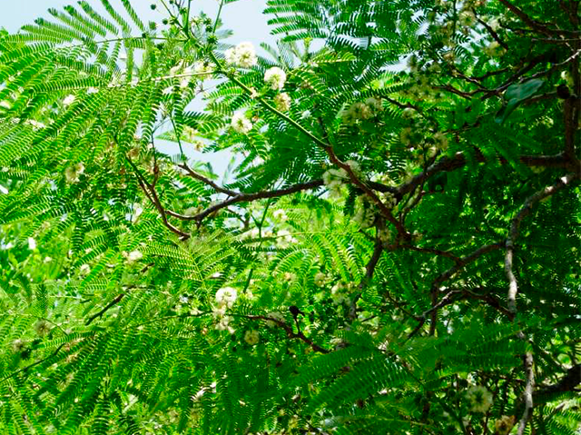
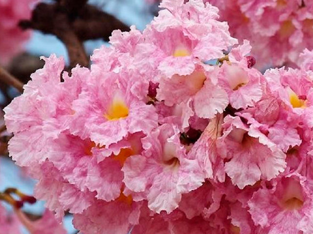

PLANTAS ENDEMICAS DE YUCATAN
La península de Yucatán es una región rica en biodiversidad, hogar de numerosas especies vegetales únicas que no se encuentran en ninguna otra parte del mundo. Estas plantas endémicas tienen un gran valor ecológico, cultural y medicinal. Muchas de ellas fueron utilizadas por los antiguos mayas en ceremonias religiosas, en la medicina tradicional y como parte de su vida cotidiana. A continuación, se describen cinco plantas endémicas de Yucatán que destacan por su importancia histórica y natural.

El balché (Lonchocarpus longistylus), conocido en lengua maya como balché’, es un árbol de pequeño a mediano tamaño que crece en las selvas bajas del norte de Yucatán. Su corteza se utiliza para preparar una bebida fermentada con agua y miel que los mayas usaban en rituales religiosos y ceremonias curativas. Esta bebida tiene efectos relajantes y se le atribuían propiedades sagradas. El balché también posee beneficios medicinales como calmante natural y ayuda para dormir, y su uso fue reprimido durante la época colonial por razones religiosas.


El chaka (Bursera simaruba), llamado chaká’ en maya, es un árbol de tronco rojizo característico por su corteza que se desprende en capas delgadas. Se adapta muy bien a climas secos y suelos pobres, siendo común en selvas secas y zonas urbanas de Yucatán. La savia del chaka es utilizada como desinfectante natural y para tratar heridas y dolores musculares. Es famoso por crecer junto al chechén, un árbol tóxico, y según una leyenda maya, el chaka representa al hermano bondadoso que cura el daño del chechén malvado.

El jubín (Dalbergia glabra), conocido en maya como kaabche’, es un árbol maderable que alcanza alturas de hasta 15 metros. Su madera dura es muy valorada para la elaboración de muebles, postes y objetos artesanales. También tiene propiedades medicinales y se utiliza en la medicina tradicional para tratar infecciones, úlceras y heridas. El jubín es una especie clave para la conservación del suelo y forma parte de los sistemas agroforestales tradicionales en comunidades rurales.

El pich (Enterolobium cyclocarpum), también llamado guanacaste, es un árbol de gran tamaño que puede llegar a medir más de 25 metros de altura. Su copa ancha proporciona sombra abundante, por lo que se cultiva cerca de viviendas y en potreros. Sus frutos tienen forma de oreja, lo que lo hace fácilmente reconocible. Además de su valor ornamental, el pich es útil en la alimentación del ganado y ayuda a enriquecer el suelo con nitrógeno. Sus hojas se pliegan por la noche, un fenómeno interesante de adaptación.

El makuilis rosa (Tabebuia rosea) es un árbol caducifolio que resalta por su hermosa floración en tonos rosados, especialmente durante la temporada seca. Es muy apreciado como árbol ornamental en parques y avenidas, no solo por su belleza, sino por su capacidad de ofrecer sombra. Su madera es utilizada en carpintería ligera, y en la medicina tradicional, la corteza se emplea como antiinflamatorio y para tratar infecciones. Las flores atraen a una gran variedad de polinizadores como abejas y colibríes, aportando al equilibrio ecológico.
Derechos Reservados por Angel © 2025
|